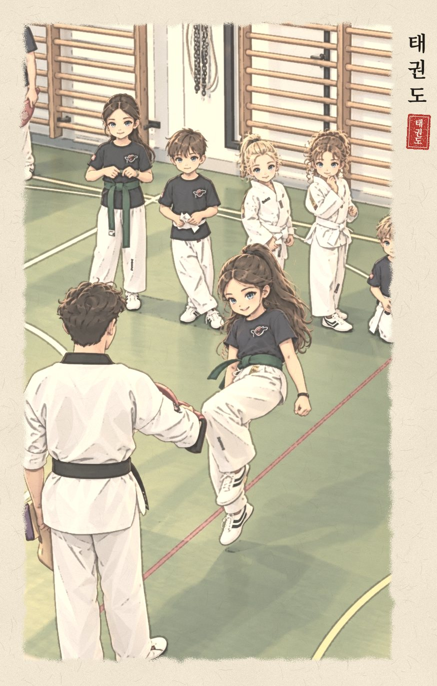

Taekwondo is young as a name and old as an idea. The name dates from 1955, but it grew out of Korean fighting traditions, Japanese karate learned during the occupation, and the work of a handful of masters who opened schools in Seoul after 1945. This page follows that story belt by belt, from white to black.
태
Tae · 跆to kick, the foot
권
Kwon · 拳the fist
도
Do · 道the way, the path

Illustration made with an AI image tool.
Part 1
From ancient Korea to the Olympics
Each era below wears a belt colour, in the order a student earns them. The modern art was born in the green-belt era, when the first schools opened in Seoul.
White belt
c. 1st century BC – 900s
Roots in the Three Kingdoms
Korea was once split into three kingdoms: Goguryeo, Baekje and Silla. Wall paintings in Goguryeo tombs show men in fighting stances, and old records mention unarmed combat called subak. In Silla, young aristocrats trained as the Hwarang, a corps that studied martial skill alongside poetry and moral codes. Taekwondo looks back to these traditions as part of its Korean heritage.
Yellow belt
1392 – 1945
Taekkyeon, then silence
During the Joseon dynasty, taekkyeon was a flowing, dance-like game of kicks and sweeps, played at festivals. It is the clearest Korean ancestor of taekwondo's kicking, and UNESCO added it to its list of Intangible Cultural Heritage in 2011.
Japan annexes Korea. Over the next 35 years, Korean martial traditions fade from everyday life.
Young Koreans studying in Japan learn karate. Several of them will go on to found taekwondo's first schools.
Liberation at the end of the Second World War. Korea regains its independence.
Green belt
1944 – mid-1950s
The kwans: schools that started it all
Around liberation, masters opened schools in Seoul called kwans (관, "hall"). They taught what they had learned, mostly karate with Korean names like tang soo do or kong soo do. Each school had its own style. These five are usually called the original kwans:
Song Moo KwanRo Byung-jick · 1944
Chung Do KwanLee Won-kuk · 1944 "Blue Wave School"
Jido KwanStarted as Yun Moo Kwan · Chun Sang-sup · 1946
Chang Moo KwanStarted at the Seoul YMCA · Yoon Byung-in · 1946–47
Moo Duk KwanHwang Kee · 1945–47
The Korean War. Martial arts training spreads through the South Korean army.
President Syngman Rhee watches a demonstration by army officers Choi Hong-hi and Nam Tae-hi. Nam famously smashes a stack of 13 roof tiles with one punch. Rhee asks Choi to introduce martial arts training across the army.
Choi founds the Oh Do Kwan to train soldiers, with Nam Tae-hi as a lead instructor. By the mid-1950s there are nine kwans in all.
Blue belt
1955 – 1966
A name, and a push to unite
The kwan leaders began meeting to merge their styles into one Korean art. On 11 April 1955 a naming board of masters and officials chose "Taekwon-Do", a name championed by General Choi Hong-hi. It sounded Korean and echoed the old art of taekkyeon.
Work begins on a national association in 1959. It is first called the Korea Tae Soo Do Association, and takes its lasting name, the Korea Taekwondo Association (KTA), in 1965.
Korean masters tour Asia, Europe and America giving demonstrations. Instructors settle abroad and open schools.
On 22 March, Choi founds the International Taekwon-Do Federation (ITF) in Seoul to spread the art worldwide.
Red belt
1966 – 2002
Two international branches
As taekwondo spread around the world, it developed along two main paths: the ITF, and the Kukkiwon with the World Taekwondo Federation. Each built its own forms, competitions and black-belt system.
The ITF moves its headquarters to Toronto, Canada. In Seoul, the Kukkiwon, the national taekwondo academy, opens on 30 November.
The first World Taekwondo Championships are held at the Kukkiwon in May. On 28 May the World Taekwondo Federation (WTF) is founded there, with 17 member nations.
On 17 July the International Olympic Committee recognises the WTF, opening the road to the Olympics.
General Choi Hong-hi, founder of the ITF, dies on 15 June, aged 83. ITF taekwon-do continues worldwide through several federations.
Black belt
1988 – today
An Olympic sport
Demonstration sport at the Seoul Olympics, and again at Barcelona 1992.
Full Olympic medal sport at Sydney, and at every Games since.
In June, the WTF renames itself World Taekwondo (WT).
South Korea's parliament designates taekwondo by law as the country's national martial art.
Para taekwondo debuts at the Tokyo 2020 Paralympics.
World Taekwondo counts 215 national associations plus a Refugee Team. Its president, Choue Chung-won, was re-elected in October 2025 for a term to 2029, and the next Olympic tournament is Los Angeles 2028.
Part 2
The family tree
One art, two main branches. If a school teaches Taegeuk forms and sparring with electronic chest protectors, it belongs to the World Taekwondo and Kukkiwon branch, the one used at the Olympics. If it teaches tul patterns like Chon-Ji and Dan-Gun, it is ITF.
Korean traditionssubak · taekkyeon
Japanese karatelearned 1930s–40s
The nine kwansSeoul · 1944–1950s
Name "Taekwondo"11 April 1955
Korea Taekwondo Association1959–65
International Taekwon-Do FederationGen. Choi Hong-hi · 1966
ITF Taekwon-Do worldwide24 tul (patterns) · own championships
KukkiwonSeoul · 1972 · grants black belts
World Taekwondo1973 · Olympic sport
Part 3
How the two branches differ
World Taekwondo · Kukkiwon
ITF
Spelling
Taekwondo
Taekwon-Do
Forms
Poomsae: eight Taegeuk forms for coloured belts, then black-belt forms
Tul: 24 patterns, one for each hour of the day, named after figures and ideas from Korean history
Sparring
Full contact. Electronic sensors in the chest protector and helmet score kicks; referees score punches. Punches only to the body. A spinning kick to the head scores most: 5 points.
Controlled contact with gloves and foot protectors. Punches to the head are allowed. Judges score the points.
Movement
Upright, quick stance; emphasis on fast, high kicks
A rising-and-falling "sine wave" motion to add power to each technique
Olympics
Yes, since 2000
No; holds its own world championships
Black belts
Certified by the Kukkiwon in Seoul
Certified by the ITF group the school belongs to
Part 4
What the colours mean
These are the meanings from General Choi's ITF tradition, which many schools in both branches still teach. Some clubs add extra colours or stripes, so your own school may tell it slightly differently.
WhiteInnocence: a beginner with no knowledge yet.
YellowThe earth, where a plant takes root as the foundation is laid.
GreenThe plant's growth, as taekwondo skills begin to develop.
BlueThe sky (heaven), which the growing plant reaches toward.
RedDanger: a warning to the student to use control, and to the opponent to stay away.
BlackThe opposite of white: maturity, skill, and imperviousness to darkness and fear.
Part 5
Green belt quiz
Six questions to test what you read. Tap an answer.
Researched and built with the help of Claude (Anthropic), based on the public sources listed above.
Breve storia per una cintura verde
La via del piede e del pugno
Il taekwondo è giovane come nome e antico come idea. Il nome risale al 1955, ma l'arte nasce dalle tradizioni marziali coreane, dal karate giapponese appreso durante l'occupazione e dal lavoro di alcuni maestri che aprirono scuole a Seul dopo il 1945. Questa pagina segue la storia cintura dopo cintura, dalla bianca alla nera.
태
Tae · 跆calciare, il piede
권
Kwon · 拳il pugno
도
Do · 道la via, il cammino
Illustrazione realizzata con uno strumento di intelligenza artificiale.
Parte 1
Dall'antica Corea alle Olimpiadi
Ogni epoca qui sotto porta il colore di una cintura, nell'ordine in cui un allievo le conquista. L'arte moderna nasce nell'epoca della cintura verde, quando a Seul aprono le prime scuole.
Cintura bianca
ca. I sec. a.C. – X sec.
Le radici nei Tre Regni
Un tempo la Corea era divisa in tre regni: Goguryeo, Baekje e Silla. Le pitture murali delle tombe di Goguryeo mostrano uomini in posizione di combattimento, e antiche cronache parlano di una lotta a mani nude chiamata subak. A Silla i giovani aristocratici si formavano negli Hwarang, un corpo che studiava l'arte marziale insieme alla poesia e a un codice morale. Il taekwondo guarda a queste tradizioni come parte della sua eredità coreana.
Cintura gialla
1392 – 1945
Il taekkyeon, poi il silenzio
Durante la dinastia Joseon il taekkyeon era un gioco fluido, quasi una danza, fatto di calci e spazzate e praticato nelle feste. È l'antenato coreano più evidente dei calci del taekwondo, e nel 2011 l'UNESCO lo ha iscritto nella lista del Patrimonio culturale immateriale.
Il Giappone annette la Corea. Nei 35 anni successivi le tradizioni marziali coreane scompaiono dalla vita quotidiana.
Giovani coreani che studiano in Giappone imparano il karate. Diversi di loro fonderanno le prime scuole di taekwondo.
La liberazione, alla fine della Seconda guerra mondiale. La Corea riconquista l'indipendenza.
Cintura verde
1944 – metà anni '50
I kwan: le scuole da cui tutto è cominciato
Intorno alla liberazione alcuni maestri aprirono a Seul delle scuole chiamate kwan (관, «sala»). Insegnavano ciò che avevano imparato, per lo più karate con nomi coreani come tang soo do o kong soo do. Ogni scuola aveva il suo stile. Questi cinque sono di solito considerati i kwan originali:
Song Moo KwanRo Byung-jick · 1944
Chung Do KwanLee Won-kuk · 1944 «Scuola dell'onda blu»
Jido KwanNato come Yun Moo Kwan · Chun Sang-sup · 1946
Chang Moo KwanNato presso lo YMCA di Seul · Yoon Byung-in · 1946–47
Moo Duk KwanHwang Kee · 1945–47
La guerra di Corea. L'addestramento alle arti marziali si diffonde nell'esercito sudcoreano.
Il presidente Syngman Rhee assiste a una dimostrazione degli ufficiali Choi Hong-hi e Nam Tae-hi. Nam rompe con un solo pugno una pila di 13 tegole, un gesto rimasto celebre. Rhee chiede a Choi di introdurre l'addestramento marziale in tutto l'esercito.
Choi fonda l'Oh Do Kwan per addestrare i soldati, con Nam Tae-hi tra gli istruttori principali. Verso la metà degli anni '50 i kwan sono nove in tutto.
Cintura blu
1955 – 1966
Un nome e la spinta all'unità
I capi dei kwan cominciarono a incontrarsi per riunire i loro stili in un'unica arte coreana. L'11 aprile 1955 una commissione di maestri e funzionari scelse «Taekwon-Do», un nome sostenuto dal generale Choi Hong-hi. Suonava coreano e richiamava l'antica arte del taekkyeon.
Nel 1959 si comincia a creare un'associazione nazionale. All'inizio si chiama Korea Tae Soo Do Association; nel 1965 prende il nome definitivo di Korea Taekwondo Association (KTA).
Maestri coreani girano Asia, Europa e America con le loro dimostrazioni. Alcuni istruttori si stabiliscono all'estero e aprono scuole.
Il 22 marzo Choi fonda a Seul la International Taekwon-Do Federation (ITF) per diffondere l'arte nel mondo.
Cintura rossa
1966 – 2002
Due rami internazionali
Diffondendosi nel mondo, il taekwondo si è sviluppato lungo due strade principali: da una parte l'ITF, dall'altra il Kukkiwon con la World Taekwondo Federation. Ognuno ha costruito le proprie forme, le proprie competizioni e il proprio sistema di cinture nere.
L'ITF trasferisce la sede a Toronto, in Canada. A Seul il 30 novembre apre il Kukkiwon, l'accademia nazionale del taekwondo.
A maggio si svolgono al Kukkiwon i primi Campionati mondiali di taekwondo. Il 28 maggio vi nasce la World Taekwondo Federation (WTF), con 17 nazioni membri.
Il 17 luglio il Comitato olimpico internazionale riconosce la WTF e apre la strada verso le Olimpiadi.
Il generale Choi Hong-hi, fondatore dell'ITF, muore il 15 giugno a 83 anni. Il taekwon-do ITF prosegue nel mondo attraverso diverse federazioni.
Cintura nera
1988 – oggi
Uno sport olimpico
Sport dimostrativo alle Olimpiadi di Seul, e di nuovo a Barcellona 1992.
Sport olimpico con medaglie a Sydney e in tutti i Giochi successivi.
A giugno la WTF cambia nome in World Taekwondo (WT).
Il parlamento sudcoreano dichiara per legge il taekwondo arte marziale nazionale del Paese.
Il para taekwondo debutta alle Paralimpiadi di Tokyo 2020.
World Taekwondo conta 215 associazioni nazionali più una squadra di rifugiati. Il presidente Choue Chung-won è stato rieletto nell'ottobre 2025 per un mandato fino al 2029, e il prossimo torneo olimpico si terrà a Los Angeles nel 2028.
Parte 2
L'albero genealogico
Un'arte, due rami principali. Se una scuola insegna le forme Taegeuk e il combattimento con corpetti elettronici, appartiene al ramo World Taekwondo e Kukkiwon, quello delle Olimpiadi. Se insegna i tul come Chon-Ji e Dan-Gun, è ITF.
Tradizioni coreanesubak · taekkyeon
Karate giapponeseappreso negli anni '30–'40
I nove kwanSeul · 1944–anni '50
Il nome «Taekwondo»11 aprile 1955
Korea Taekwondo Association1959–65
International Taekwon-Do FederationGen. Choi Hong-hi · 1966
Taekwon-Do ITF nel mondo24 tul (forme) · campionati propri
KukkiwonSeul · 1972 · rilascia le cinture nere
World Taekwondo1973 · sport olimpico
Parte 3
Come si distinguono i due rami
World Taekwondo · Kukkiwon
ITF
Grafia
Taekwondo
Taekwon-Do
Forme
Poomsae: otto forme Taegeuk per le cinture colorate, poi le forme per cintura nera
Tul: 24 forme, una per ogni ora del giorno, dedicate a personaggi e idee della storia coreana
Combattimento
Contatto pieno. Sensori elettronici nel corpetto e nel casco assegnano i punti dei calci; i pugni li valutano gli arbitri. Pugni solo al tronco. Il calcio girato alla testa vale di più: 5 punti.
Contatto controllato, con guanti e protezioni per i piedi. I pugni alla testa sono ammessi. I punti li assegnano i giudici.
Movimento
Guardia alta e rapida; accento su calci veloci e alti
Un movimento che sale e scende, detto «onda sinusoidale», per dare più potenza a ogni tecnica
Olimpiadi
Sì, dal 2000
No; organizza i propri campionati mondiali
Cinture nere
Certificate dal Kukkiwon di Seul
Certificate dalla federazione ITF a cui appartiene la scuola
Parte 4
Che cosa significano i colori
Questi sono i significati della tradizione ITF del generale Choi, che molte scuole di entrambi i rami insegnano ancora. Alcune palestre aggiungono altri colori o strisce, quindi nella tua scuola potrebbero spiegarli in modo un po' diverso.
BiancaInnocenza: un principiante che non sa ancora nulla.
GiallaLa terra, in cui la pianta mette radici mentre si gettano le fondamenta.
VerdeLa crescita della pianta, mentre le abilità nel taekwondo cominciano a svilupparsi.
BluIl cielo, verso cui si allunga la pianta che cresce.
RossaPericolo: un invito all'allievo a mantenere il controllo, e un avvertimento all'avversario a stare lontano.
NeraL'opposto del bianco: maturità, abilità e forza davanti al buio e alla paura.
Parte 5
Il quiz della cintura verde
Sei domande per vedere che cosa ricordi. Tocca una risposta.
Ricerca e pagina realizzate con l'aiuto di Claude (Anthropic), sulla base delle fonti pubbliche indicate sopra.
O scurtă istorie pentru o centură verde
Calea piciorului și a pumnului
Taekwondo este tânăr ca nume și vechi ca idee. Numele datează din 1955, dar arta s-a născut din tradițiile marțiale coreene, din karateul japonez învățat în timpul ocupației și din munca unor maeștri care au deschis școli la Seul după 1945. Pagina aceasta urmărește povestea centură cu centură, de la albă la neagră.
태
Tae · 跆a lovi cu piciorul, piciorul
권
Kwon · 拳pumnul
도
Do · 道calea, drumul
Ilustrație realizată cu un instrument de inteligență artificială.
Partea 1
Din Coreea antică până la Jocurile Olimpice
Fiecare epocă de mai jos poartă culoarea unei centuri, în ordinea în care le obține un elev. Arta modernă s-a născut în epoca centurii verzi, când la Seul s-au deschis primele școli.
Centura albă
cca. sec. I î.Hr. – sec. X
Rădăcini în cele Trei Regate
Coreea a fost cândva împărțită în trei regate: Goguryeo, Baekje și Silla. Picturile murale din mormintele Goguryeo arată bărbați în poziții de luptă, iar cronicile vechi pomenesc o luptă cu mâinile goale numită subak. În Silla, tinerii aristocrați se pregăteau în corpul Hwarang, unde studiau arta luptei alături de poezie și de un cod moral. Taekwondo privește aceste tradiții ca parte din moștenirea sa coreeană.
Centura galbenă
1392 – 1945
Taekkyeon, apoi tăcerea
În timpul dinastiei Joseon, taekkyeon era un joc fluid, aproape un dans, cu lovituri de picior și secerări, jucat la sărbători. Este cel mai limpede strămoș coreean al loviturilor de picior din taekwondo, iar în 2011 UNESCO l-a înscris pe lista Patrimoniului cultural imaterial.
Japonia anexează Coreea. În următorii 35 de ani, tradițiile marțiale coreene dispar din viața de zi cu zi.
Tineri coreeni care studiază în Japonia învață karate. Mai mulți dintre ei vor fonda primele școli de taekwondo.
Eliberarea, la sfârșitul celui de-Al Doilea Război Mondial. Coreea își recapătă independența.
Centura verde
1944 – mijlocul anilor '50
Kwan-urile: școlile cu care a început totul
În jurul eliberării, câțiva maeștri au deschis la Seul școli numite kwan (관, „sală”). Predau ce învățaseră, mai ales karate cu nume coreene precum tang soo do sau kong soo do. Fiecare școală avea stilul ei. Acestea cinci sunt considerate de obicei kwan-urile originale:
Song Moo KwanRo Byung-jick · 1944
Chung Do KwanLee Won-kuk · 1944 „Școala Valului Albastru”
Jido KwanLa început Yun Moo Kwan · Chun Sang-sup · 1946
Chang Moo KwanPornit la YMCA din Seul · Yoon Byung-in · 1946–47
Moo Duk KwanHwang Kee · 1945–47
Războiul din Coreea. Pregătirea în arte marțiale se răspândește în armata sud-coreeană.
Președintele Syngman Rhee urmărește o demonstrație a ofițerilor Choi Hong-hi și Nam Tae-hi. Nam sparge cu un singur pumn un teanc de 13 țigle, un moment rămas celebru. Rhee îi cere lui Choi să introducă pregătirea în arte marțiale în toată armata.
Choi fondează Oh Do Kwan pentru pregătirea soldaților, cu Nam Tae-hi printre instructorii principali. Pe la mijlocul anilor '50 există nouă kwan-uri în total.
Centura albastră
1955 – 1966
Un nume și un pas spre unitate
Conducătorii kwan-urilor au început să se întâlnească pentru a-și uni stilurile într-o singură artă coreeană. Pe 11 aprilie 1955, o comisie de maeștri și oficiali a ales numele „Taekwon-Do”, susținut de generalul Choi Hong-hi. Suna coreean și amintea de vechea artă taekkyeon.
În 1959 începe crearea unei asociații naționale. La început se numește Korea Tae Soo Do Association, iar în 1965 primește numele definitiv, Korea Taekwondo Association (KTA).
Maeștri coreeni fac turnee de demonstrații în Asia, Europa și America. Unii instructori se stabilesc în străinătate și deschid școli.
Pe 22 martie, Choi fondează la Seul International Taekwon-Do Federation (ITF), pentru a răspândi arta în lume.
Centura roșie
1966 – 2002
Două ramuri internaționale
Pe măsură ce s-a răspândit în lume, taekwondo s-a dezvoltat pe două drumuri principale: ITF, pe de o parte, și Kukkiwon împreună cu World Taekwondo Federation, pe de alta. Fiecare și-a construit propriile forme, competiții și sistem de centuri negre.
ITF își mută sediul la Toronto, în Canada. La Seul, pe 30 noiembrie, se deschide Kukkiwon, academia națională de taekwondo.
În mai au loc la Kukkiwon primele Campionate Mondiale de Taekwondo. Pe 28 mai ia naștere acolo World Taekwondo Federation (WTF), cu 17 țări membre.
Pe 17 iulie, Comitetul Olimpic Internațional recunoaște WTF și deschide drumul spre Jocurile Olimpice.
Generalul Choi Hong-hi, fondatorul ITF, moare pe 15 iunie, la 83 de ani. Taekwon-do ITF continuă în lume prin mai multe federații.
Centura neagră
1988 – azi
Un sport olimpic
Sport demonstrativ la Jocurile Olimpice de la Seul și din nou la Barcelona, în 1992.
Sport olimpic cu medalii la Sydney și la toate Jocurile de atunci încoace.
În iunie, WTF își schimbă numele în World Taekwondo (WT).
Parlamentul sud-coreean declară prin lege taekwondo drept artă marțială națională a țării.
Para-taekwondo debutează la Jocurile Paralimpice de la Tokyo 2020.
World Taekwondo are 215 asociații naționale, plus o echipă a refugiaților. Președintele său, Choue Chung-won, a fost reales în octombrie 2025 pentru un mandat până în 2029, iar următorul turneu olimpic va avea loc la Los Angeles, în 2028.
Partea 2
Arborele genealogic
O singură artă, două ramuri principale. Dacă o școală predă formele Taegeuk și lupta cu veste electronice, aparține ramurii World Taekwondo și Kukkiwon, cea de la Jocurile Olimpice. Dacă predă tul-uri precum Chon-Ji și Dan-Gun, este ITF.
Tradiții coreenesubak · taekkyeon
Karate japonezînvățat în anii '30–'40
Cele nouă kwan-uriSeul · 1944–anii '50
Numele „Taekwondo”11 aprilie 1955
Korea Taekwondo Association1959–65
International Taekwon-Do FederationGen. Choi Hong-hi · 1966
Taekwon-Do ITF în lume24 de tul-uri (forme) · campionate proprii
KukkiwonSeul · 1972 · acordă centurile negre
World Taekwondo1973 · sport olimpic
Partea 3
Prin ce se deosebesc cele două ramuri
World Taekwondo · Kukkiwon
ITF
Scriere
Taekwondo
Taekwon-Do
Forme
Poomsae: opt forme Taegeuk pentru centurile colorate, apoi formele pentru centura neagră
Tul: 24 de forme, câte una pentru fiecare oră a zilei, dedicate unor personaje și idei din istoria Coreei
Luptă
Contact plin. Senzorii electronici din vestă și cască punctează loviturile de picior; pumnii sunt punctați de arbitri. Pumni doar la trunchi. Lovitura cu rotire la cap valorează cel mai mult: 5 puncte.
Contact controlat, cu mănuși și protecții pentru picioare. Pumnii la cap sunt permiși. Punctele le acordă arbitrii.
Mișcare
Gardă înaltă și rapidă; accent pe lovituri de picior rapide și înalte
O mișcare de urcare și coborâre, numită „undă sinusoidală”, care dă mai multă forță fiecărei tehnici
Olimpiade
Da, din 2000
Nu; are propriile campionate mondiale
Centuri negre
Certificate de Kukkiwon, la Seul
Certificate de federația ITF din care face parte școala
Partea 4
Ce înseamnă culorile
Acestea sunt semnificațiile din tradiția ITF a generalului Choi, pe care multe școli din ambele ramuri le predau și azi. Unele cluburi adaugă alte culori sau dungi, așa că la școala ta s-ar putea să fie explicate puțin diferit.
AlbăInocența: un începător care încă nu știe nimic.
GalbenăPământul, în care planta prinde rădăcini în timp ce se pun bazele.
VerdeCreșterea plantei, pe măsură ce abilitățile de taekwondo încep să se dezvolte.
AlbastrăCerul, spre care se înalță planta care crește.
RoșiePericolul: un semn pentru elev să-și păstreze controlul și pentru adversar să stea departe.
NeagrăOpusul albului: maturitate, pricepere și tărie în fața întunericului și a fricii.
Partea 5
Testul centurii verzi
Șase întrebări ca să vezi ce ai reținut. Atinge un răspuns.